2025机器学习导论
课程简介
- 不要把AI看作魔法，而是魔术
生成式AI基本原理
- 语言模型是什么？
- 文字接龙
- 接龙的通常被称为Token
- 输入被称为Prompt
- 语言模型如何进行回应？
- 输入Prompt预测下一个Token
- 将生成的Token接到Prompt后再预测下一个
- 直到生成结束符号
- 如何生成Token？
- 概率，给分数
- 掷色子
- 词表的概率分布
- 冰淇凌接在最高的山后面的概率极低
- 文字接龙并不简单
- 语言知识：较容易学，学文法
- 世界知识：无穷无尽，没有办法全部知道
- 如何学会正确接龙？
- 网络资料
- 人类标注
- 使用者回馈
- 语言模型为什么会回答问题？
- 即为什么会接出回答？而不是继续可能的接龙？
- 其实还有额外的输入，chat template
- 语言模型如何多轮对话？
- 模型的记忆
- 其实还是利用chat template拼接了之前的历史和现在的对话
- 语言模型真正做的事情就是文字接龙……
- 因此会有AI幻觉，幻觉就是在接龙中产生的
- 想象场景
- 大模型就是在一个小房间里做文字接龙
- 能够回答几月几号的秘密？
- 因此人类需要保证有足够的信息交给模型
- 预设每次对话可能是用的内容，这些会被注入提示词中
- 机器怎么画图或发出音乐？
- 还是接龙，像素接龙，取样点接龙产生声音
- 太耗费资源了，等于每生成一张图片相当于写一部红楼梦
- 利用图像的Encoder，而后生成图片Token，再通过Decoder接龙，再转回图像
- 生成式人工智能基本原理
- 让机器学会产生复杂而有结构的物件
- 复杂表示的是无穷可能
- 有结构的物件指的是基本单位Token组成
- 尽管y的组合是无穷无尽的，但是下一个y的选择不是
- 只需要教会机器如何每次选一个合适的\(y_i\)
- 其实就是一个分类问题
- 在此表中做选择题
- Diffusion Model：另一种生成模型
- 开源模型和非开源模型
- 非开源模型：不知道f
- 开源模型：知道f，知道参数
tokenizer：- 对应的就是我们之前说的词表相关的内容
vocab_size可以看到有多少Token可以选择decode(token_id)可以查看对应编号的Token实际是什么- 128个空格合在一起甚至也是一个Token，各式各样的Token，包罗万象
encode(text)可以得到text对应的词表编号- 单词前面有没有空白可能划分为不同的Token
model- 就是我们的模型参数
- 模型会根据不同输入产生不同输出的概率分布
- model每次输出其实就是一些logits，不断输出以及根据概率取下一个其实都是工程上做的事情，包括循环、拼接、softmax
- 通过掷色子进行接龙可能会出现奇奇怪怪的东西，因此实际操作时只有概率足够大的才会进行掷色子
model.generate可以简化上述实现，不用自己写循环
- 使用
chat template- 上面做接龙可以看到模型并没有在好好回答问题，只是在接龙
- 自己想个chat template也可以做接龙，但是可能不会在合适位置停止，因此需要使用模型对应的template
apply_chat_template函数，会帮助拼接聊天模板并转化为ids
- 一般情况使用transformers库使用模型还是用pipeline直接得到输出比较常用
- 多轮对话的秘密
- 历史记录
- 运用模板进行拼接
上下文工程
- 将模型看作利用f对于输入x操作
- f(x)结果不对该如何处理？
- 两条路，要么修改x要么修改f
- 修改f中的参数叫做训练或者学习
- 修改x就是我们的context engineering
- 这堂课中被训练的只有人类
- context engineering vs prompt engineering
- 新瓶装旧酒
- 早期版本prompt可以使用一些神奇咒语，早期能够发挥作用，上古时代
- 神奇咒语越来越不神奇
- context engineering：自动化管理
- context里面需要什么？
- user prompt
- 任务说明
- 详细指引
- 额外说明
- 输出风格
- 提供前提会影响结果
- 给范例，举例说明，GPT-3提出
- system prompt
- 身份信息
- 使用说明与限制
- 安全与禁止事项
- 回应风格与格式
- 自我定位与哲学风格
- 短期记忆
- 实际上没有训练模型，即接龙模型本身没有改变
- 历史上下文
- 长期记忆
- 来自其他资料源的相关资讯
- 网络或者资料库
- RAG、Web Search
- 就算是搭配搜索引擎也不能保证完全正确，因为还是进行接龙
- Tool Use
- Search、Gmail……
- 先要教会模型如何使用所有工具
- 还要告知模型特定工具的使用方式
- 模型输出就是文字，无法真的呼叫工具，还是需要工程
eval(str)会执行str中的函数- 使用电脑？鼠标和键盘也是工具其实
- 模型自己产生的思考过程
- user prompt
- Context很长，所以Context Engineering核心目标就是避免塞爆上下文
- 使用AI的方式
- 一般使用的方式：一问一答
- Agentic Workflow：按照固定SOP
- AI Agent：自己决定解决问题步骤，灵活调整计划
- AI Agent
- 可以看成一个循环
- Goal、Observation、Action、Environment
- 回答是语言，因此可能性是无穷的
- 从LLM角度看Agent，其实还是在做接龙
- Context Windows Sizes
- 能读入百万Token不代表能够读懂百万Token
- 输入过长会有什么问题？RAG搜寻到的资料是越多越好吗？
- Lost in the Middle
- Lost in the Conversation?交互变长模型表现变差？
- 腐烂的上下文
- context不能过长
- context engineering
- 需要的东西放进来
- 不需要的去掉
- 三个方法：
- 挑选需要的内容：RAG、websearch、reranking，不要把所有工具的使用说明放入context，挑选记忆
- 对记忆进行RAG
- 压缩内容
- 互动100次压缩一次
- 90%就压缩一次
- 放到RAG
- Multi-Agent
- 近似于人类社会的分工
- 挑选需要的内容：RAG、websearch、reranking，不要把所有工具的使用说明放入context，挑选记忆
解剖大语言模型
- 从输入prompt到输出下一个token
- Tokenization：将句子切分为Token并变成对应ids
- Token Embedding：输入id查Embedding Table表，查看对应的embedding向量，token embedding
- 是一个矩阵，也就是参数
- 相同token对应的embedding向量相同，语义相近token对应的embedding向量相似
- layer by layer：一排向量到一排向量，长度保持不变
- layer也是矩阵和参数
- 考虑了上下文的embedding，contextualized embedding
- 多个layer也就是deep learning
- 考虑上下文后的embedding就会变得不一样
- 不同层可能关注的不一样？embedding特定方向可能表示特定含义，例如表示中英翻译，将高维投影到低维空间进行研究？
- 操控语言模型拒绝或同意？找到经过哪一个层的representation后包含拒绝成分？找出拒绝向量？抽离出来
- logits lens：其实可以对每一层进行unembedding，看到每一层模型的心理变化
- patchscopes：不同输入经过同一模型，其中一个不包含具体的事物，一个就是具体的事物或者人，替换每一层最后一个representation，从而看模型每一层融合了什么信息
- unembedding：
- 最后一个token向量拿出来，乘以一个映射到V维词表的矩阵，得到对应的分数logit
- 再进行softmax，得到机率，也不一定用softmax，可以用你自己认为的可以表示概率的方式
- 模型输出的只是logit
- 首尾呼应，以始为终，最后的矩阵也可以使用一开始的embedding table
- 看看每一层的输出是什么
- 在上一章节介绍，尝试看模型每一层到底理解什么，思考什么
- 看看每一层内部如何运作
- Transformer架构
- 一个layer中还有子layer
- self-attention layer：融合上下文
- feed-forward layer：得到输出
- attention is all you need：
- 不是发明了attention，而是拿掉了attention以外的东西，这是最大的贡献
- 可以做很好的并行化
- Attention Layer
- 输入：两颗青苹果
- 寻找输入中会影响
[果]的意思的Token - 乘以矩阵得到query和key
- 计算query和key的影响力分数
- 没有考虑两个token的距离
- 考虑距离：positional embedding
- 算出attention weight，再进行softmax
- 矩阵\(W_v\)，加权得到新的向量，由于残差连接的存在，其实并不会忘掉自身含义
- Multi-head Attention
- “青”对于“果”很重要，找形容词
- 但不能说“两”不重要，因此一般会有多个Attention，关注不同部分
- 例如有一个Attention专门找数量关系
- 多个不同特征的向量还需要糅合起来
- 实际操作时只会考虑左侧的Token
- feed-forward layer
- 线性变换 + 激活函数
- 一般两层，升维和降维
- 神经元其实就都是矩阵运算而已，骗骗麻瓜
- 可以剖析模型每一层的输入和输出
- 虽然打印出来可能人类看不懂
- 但借助上面每一层输出以及内部运作，其实我们就能知道一个模型到底在做什么
如何评估模型
- 哪一个模型比较好？
- 人工智能能力评价Evaluation
- 模型输出与ground truth？
- benchmark，评估模型在某个任务上的能力
- 如何对答案？
- 最简单就是exact match，直接比较答案是不是完全一致，但显然有很多问题，选择题这些场景可以使用这种方式
- 但前提是模型可以看懂指令，能够只输出一个字母作为答案
- 计算模型输出与标准答案之间的相近程度
- BLEU、ROUGE
- 比较有多少共同的词汇
- 依旧有限
- 通过Embedding看相似程度？representation相近
- BERT Score
- 不要过度相信evaluation的分数
- 可能会得到一个在evaluation取得高分，但实际上表现不佳的模型
- 聪明的鹦鹉、愚蠢的鹦鹉
- 过度相信evaluation的分数也是幻觉的原因之一
- 知道要说“我不知道”的模型在evaluation的时候并不获得青睐
- 可能解法，加入倒扣，引导模型说我不知道而不是随便乱说
- 最简单就是exact match，直接比较答案是不是完全一致，但显然有很多问题，选择题这些场景可以使用这种方式
- 如果没有标准答案？
- 写小说，写诗
- 直接找一堆人给分数，永远可以用的方法
- 人类的评估就没有问题吗？
- 有时候人类在意怎么说而忽略说了什么
- 看一些格式是否漂亮，标点符号
- 人类也有自己的偏见
- 人类评估的setting不一样结果也不一样
- 花时间、花钱、可复现性差
- 用语言模型来评分
- 先解释再给分数可能更好？
- 把不同模型给出的分数的机率分数考虑在内？加权平均？
- 专门评分的模型？专门训一个模型，也可以把加权平均考虑到训练过程中？
- using verifier to impore models
- 其实也就是reward模型，RL
- 训练评估好坏的模型比生成容易，评价一本小说比写一本小说容易
- 语言模型的偏见：
- 对于自己的偏好，知道答案是修改后的也会增加分数
- 加个网址引用而相信回答更好
- 怎么做比较好？先小规模验证语言模型的评量结果
- 看是否与人类评分接近，而后再用人类进行打分
- 模型输出内容以外的考量？速度、价格、思考
- 为什么考虑平均不一定是最合适的？
- 平常都表现完美，但突然暴走
- 有点小失真，但从不暴走
- 上面两个模型哪一个更好？取决于你的需求
- 木桶理论？考虑实际应用
- 要考人工智能什么？
- 问问你自己
- 要考AI什么，取决于你在意什么
- 单一任务、特定领域、通用模型
- 各大语言模型在意哪些任务上的表现
- 代码，工具，数学，知识，视觉，金融
- 让语言模型下西洋棋
- 模型能不能根据情景不同改变是否拒答？
- prompt可能会对evaluation有影响
- 处理长文的能力——大海捞针测试
- 模型可能会拒绝回答，小心你使用的prompt
- 使用多个prompt的结果进行平均
- 模型会不会已经偷看过考题了？
- 训练时是不是已经看过benchmark题目
- 评量模型对于恶意使用的抵抗能力
- jailbreak：回答什么和要不要回答是分开处理的
- 击穿模型
- 拒绝回答回路可能并没有启动
- 暴力扰动尝试
- prompt injection attack
- 猫娘数字人？
- 论文投稿的prompt injection attack
- jailbreak：回答什么和要不要回答是分开处理的
- agent attack
- agent跟环境互动时可能读取到
- 语言模型的偏见
- 性别、种族、年龄
机器学习与深度学习
- 原理
- 如何根据资料找出函数\(f\)？
- 可以找各种各样的函数
- 输出数字的任务为regression
- 可能有莫名其妙的的任务，比如我们来回答一个讲一堂课需要多久这个函数
- 找函数步骤3+1
- learning、training
- 我要找什么
- 我有哪些选择
- 选一个最好的
- 我要找什么？
- 上节课的评估模型方法？
- 计算预测时长和实际结果的差距
- 越小越好，Loss
- 越大越好，Objective
- 这个过程几乎和Evaluation过程是一样的
- 但其实两者有时候会不一样
- 拿来定义Loss的数据资料就是训练集
- 我们有哪些选择？
- 可以把投影片表示成多个数字？比如页数、标题长度等等\(x_i\)，其实就是feature
- 可以看到目标输出可以表示成\(x_i\)的函数
- 数值不知道的东西就是参数
- 代表的其实是函数的集合，因为参数未知
- 这些选择都是出自人类对于任务的理解，其实也就是模型，真实世界很复杂我们想办法去简单表示，这就是模型
- 先把Loss完整式子写出来，选择不同参数则有不同的Loss
- 我们需要选一个最好的函数，使得Loss最小
- 我们真正要做的事情，要解决的问题就是一个Optimization问题
- 假设对于optimization一无所知，最简单的方式就是暴力检索
- 找到一组参数带入到Loss函数中，使得loss计算值最小
- loss的等高线图？
- 通用的做法进行最优化求解？梯度下降法。
- 只考虑改变一个参数
- 饿狼下坡？随便找一个起始点开始，看往左边和往右边踏一小步进行试探，往哪个方向可以使得loss下降
- 往该方向踏一大步
- 往左和右都不会使得L变小，停下，局部极值点
- 实际并不会真的往左还是往右进行试探，会直接计算切线斜率，决定往哪里走
- 如何计算斜率？偏微分
- 深度学习套件可以自动计算
- 一步要走多大？学习率和偏微分共同决定
- 山坡越陡，跨的越大
- 直到切线斜率接近于0
- 实际过程
- 随机给参数赋值开始
- 分别求偏微分，也就是梯度
- 更新参数
- 反复上述操作
- 更加通用的情况
- 非常庞大数量的参数集合，看作参数集合向量
- 分别计算在该集合参数时的梯度，也就是一个梯度向量
- 更新参数集合向量，一次iteration或者update
- 简化写法使用倒三角表示梯度计算
- 反复上次过程
- 概念很简单，做起来不容易
- 首先很难调出一个非常理想的learning rate，过大过小都不好
- 参数很多时，显然不能进行暴力搜索，我们发现loss几乎没有下降时，到底是停下来还是继续向前？
- 参数更新太慢？
- 计算Loss需要计算所有的平均
- 如果训练资料很多，要等很久才能更新一次参数
- 迫不及待地更新参数
- 切分为多个batch，只在每个batch中计算Loss并更新参数
- 1个epoch就是把所有的batch看一遍
- 好处和坏处：update更多次数的参数，但是走得比较不稳定
- 设置一个合适的batch size，不大不小的值，也是一个超参数
- shuffle技术？每个epoch中的batch中组合不同，希望能够看到不一样的数据组合进行更新。
- +1步骤？验证validation，模拟考
- 验证集
- 结果好可以进行测试
- 结果不好就需要解释前三个步骤了
- 验证第一步。错误的目标上进行optimization根本就是缘木求鱼？不可能得到好的结果，例如应该用导论数据来训练一个预测导论课程时长的模型
- 验证第二步。是不是函数的选择太少了？不应该用线性模型？是否可以画一个有机会包含所有函数的范围，去拟合这些点？锯齿状的线去拟合曲线，都可以表示成一个常数加上一堆山坡状函数相加。参数太多了没法画loss的等高线图，只能画随着epoch增多的loss值的变化。结果这个更大范围的最小loss居然比线性函数还要大？什么情况？
- 验证第三步。Optimization Fail？陷入局部最小值或者是卡平台，又或者就是loss下降梯度过小了认为已经足够了。每次要解决一个问题，可以从一个简单模型入手，因为我们知道不可能loss比一个线性模型低，如果低了就考虑是不是optimization出现了问题，而不是盲目去扩大神经元数量。怎么改？爆调超参数，学习率、epoch数量、batch size等等。
- 验证集和训练集上结果差距巨大时，就需要考虑是不是overfitting了，也就是过拟合了。函数表示范围越大越容易变得过拟合。
- overfitting：选择越多，训练和经验的差距越大，学车和自己上路开车，训练场地的一些参考标记，换一个场地你也许就不会开了。这也就是为什么步骤二需要画一个范围，不能太大也不能太小。
- 一般需要在三个步骤和验证上反反复复，直到找到一个在训练集和测试集上都合适的函式。每一个Epoch结束都去量Validation Loss，进行early stopping。来来回回其实也是有代价的，可能在验证集上overfitting！可能得到一个在训练集和测试集上都loss低，但在测试集上一塌糊涂的函式。
- 测试Testing，正式考试
- 如果在测试集上表现不佳，还是需要重复上述循环，直到得到一个三个数据集上表现都好的函式。
- 但是想象我们能够进行无限制的测试，会发生什么？overfit在测试资料上！也就是为什么benchmark上模型能够大幅打败人类。
- 鬼灭之刃？人一次就会被杀死，鬼不会被杀死。
- 所以一般都是将测试集划分为两个部分，public和private。private部分上只能测试一次，可能能够更加接近你模型的实际表现。
- 两个特征相差比较大使用同一个学习率的时候比较难训练，很容易就训练飞了。
- learning、training
- https://www.youtube.com/watch?v=Taj1eHmZyWw&list=PLJV_el3uVTsMMGi5kbnKP5DrDHZpTX0jT&index=6
- 这堂课后面手动计算上述过程的实操可以多看两遍，其实就是一些矩阵，计算梯度，更新参数，相当于手写神经网络了。
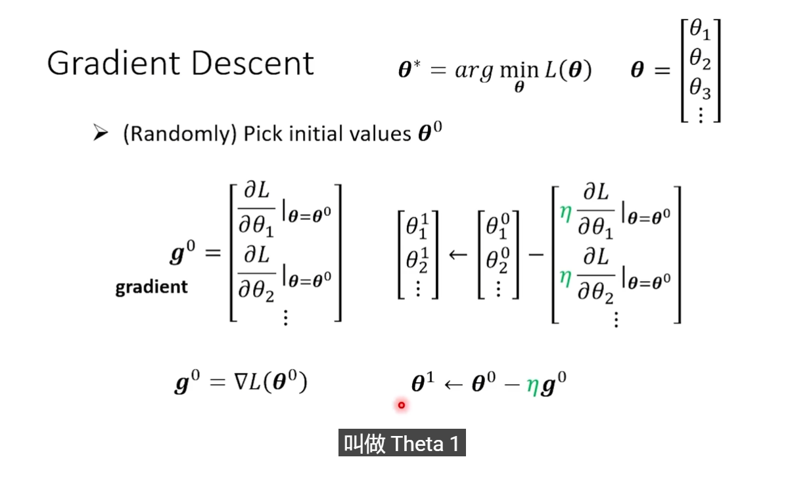
- 理解参数集合更新过程
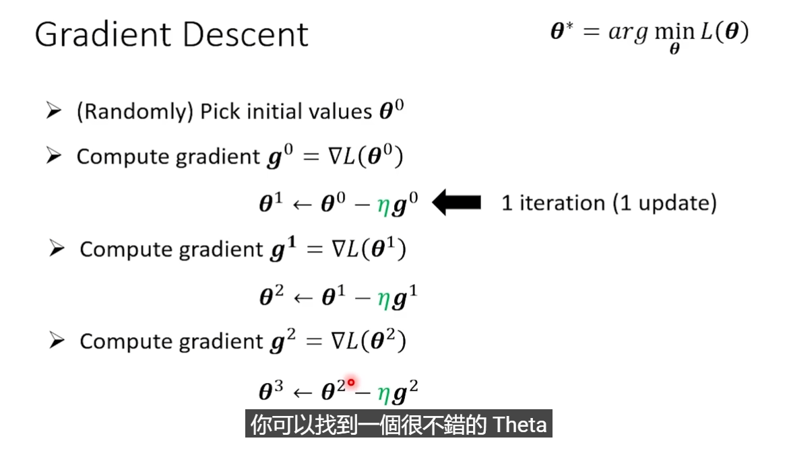
- 多次进行更新
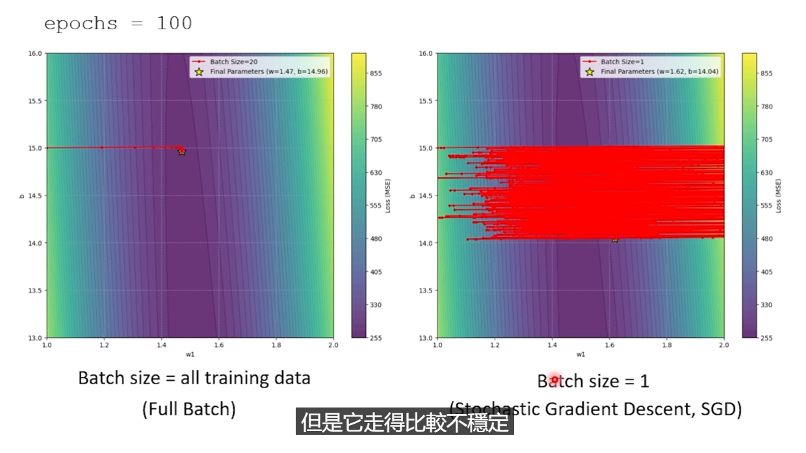
- 比较full batch和多个batch更新参数的过程
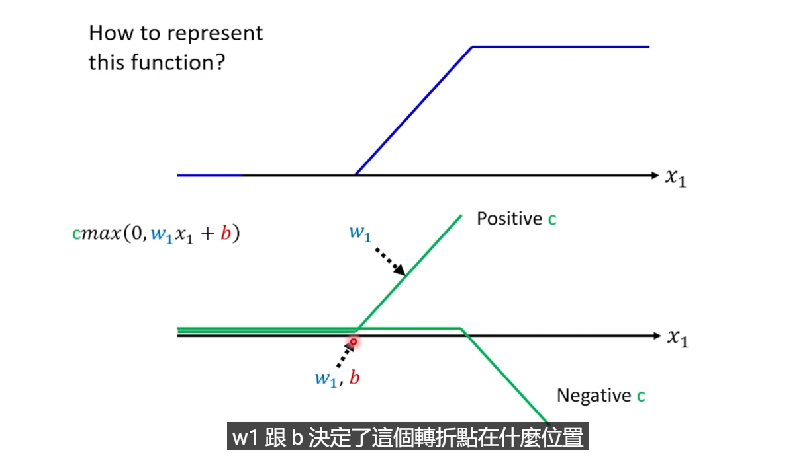
- 蓝色函数可以用两个绿色函数表示
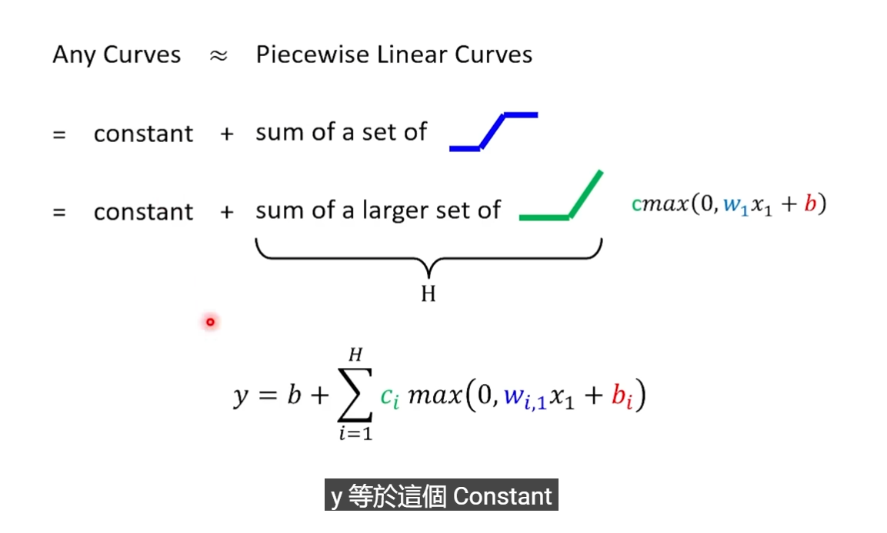
- 都可以表示为常数加上一堆绿色函数的相加集合，绿色函数其实就是ReLu函数
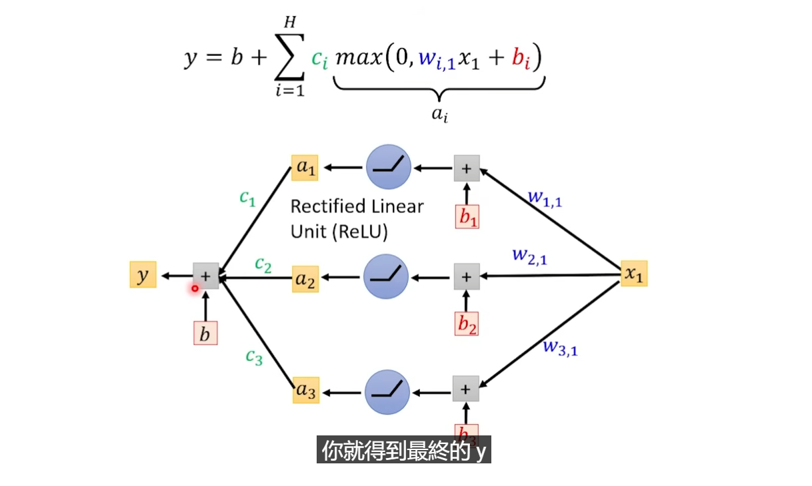
- 将上述式子进行图像化
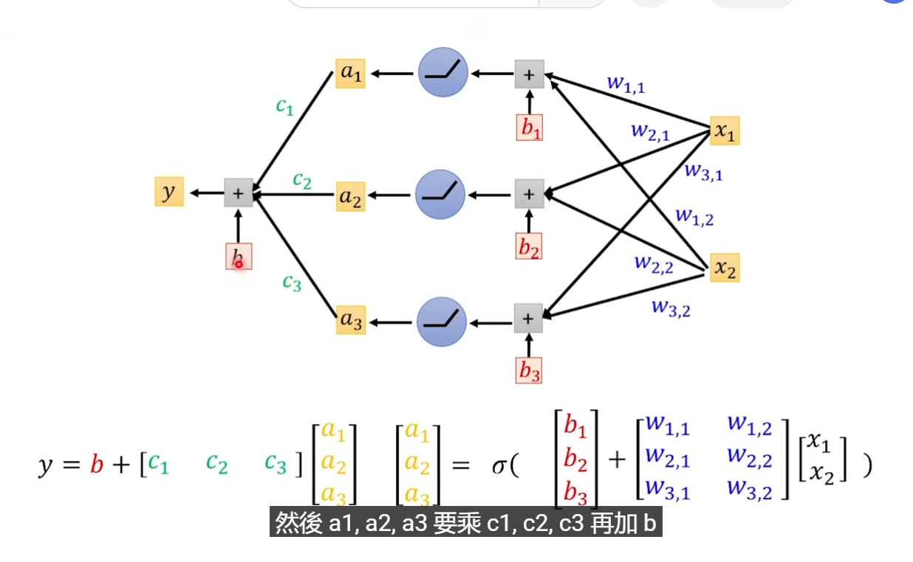
- 扩展到多个feature，一切都是矩阵的相加相乘而已，有点惊人，居然就是一般深度学习的表示形式
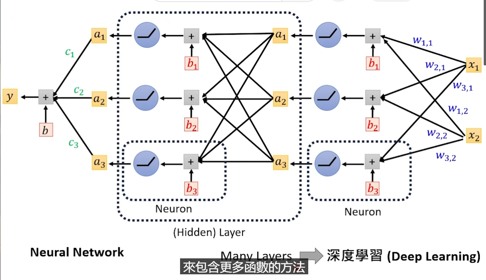
- 我们可以将上一步操作的输出作为输入继续上述过程，也就形成了更多的layer，也就是deep learning。如果一层有非常多的ReLU就可以表示非常多的转折点，就可以表示出更加复杂的函数。
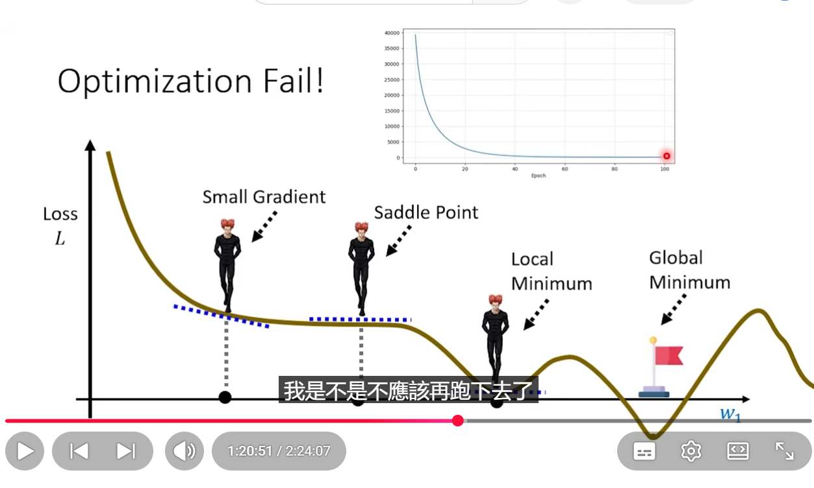
- 更大的函数表示空间为什么没有得到更小的Loss？
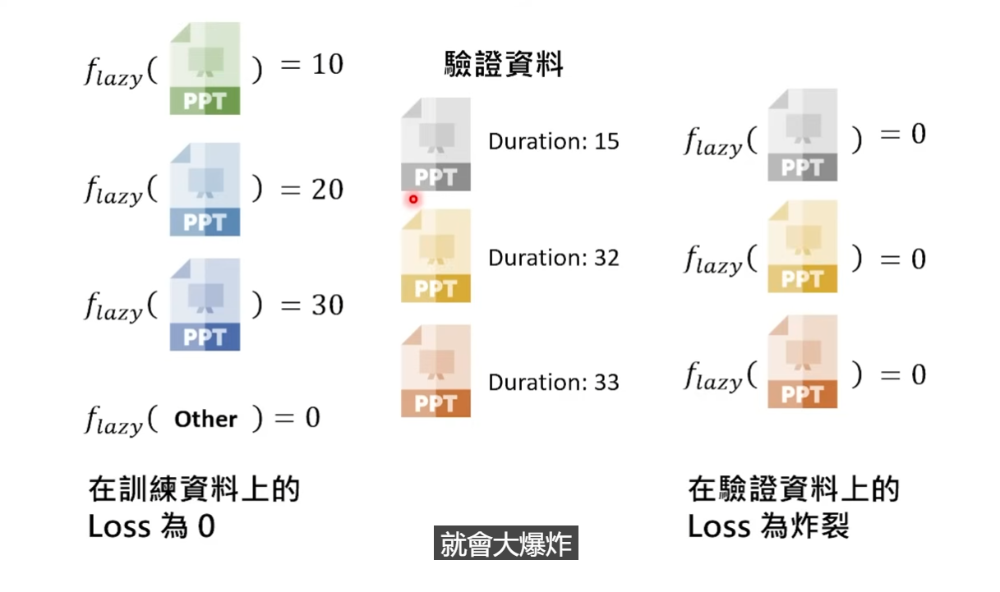
- 上述这个函式没有违反我们选择的任何原则，但是显然不是一个好的函式，会导致验证集上loss的爆炸。
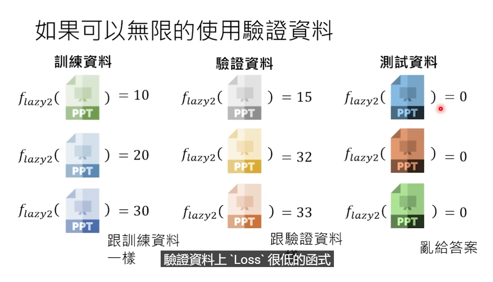
- 在验证集上overfitting，仍然是一个没有用的函式。
训练神经网络常用技巧
听到一个跟训练神经网络有关的方法时，你要这样问自己： - 方法名 - 改了哪一个步骤？三个中的哪一个 - 新的Loss function？ - 改了网络架构？也就是改变了函数表示空间？ - 是一个更好的，更有效的，搜寻loss最低的方式 - 带来什么好处？ - better optimization：更低的Training loss - better generalization：更低的Validation loss，避免over fitting的发生
流水账开始介绍
改进步骤三： - 改进optimization - 选择optimizer - Vanilla Gradient Descent：最简单最基本的梯度下降，根据当下梯度算出来的，如果当下gradient为0，就不知道该怎么走 - Gradient Descent + Optimizer：根据一堆历史梯度一起来决定方向 - 为什么需要optimizer：LR实在是难调…… - 太大很容易训飞，太小容易走很多步也没更新多少 - 不同参数应该要有不同的learning rate：因材施教 - 我们没有上帝视角，但是可以使用过去的Gradient来决定LR，梯度大我们就给他较小的learning rate - Adagrad：引入一个控制量，不停计算平方和并开根号，手搓也很简单，代码需要更新的地方就是使用Adagrad更新参数。可以将lr调的很大，因为很快也能够调控回来，也应该这么做。 - RMSProp：上述改良版，给予最近的梯度更大或者更小的权重，通常需要更小的lr，否则容易训飞 - Optimization会在Gradient很小时停止 - 不一定停在local minimum，而是在gradient为0的平地Saddle Point或者极小的点Small Gradient，坑太多了，如何处理？ - 想象动量Momentum？移动中的物体不会轻易停下来。具有足够的动量也许就能继续向前。 - Momentum：不再按照gradient方向来更新参数，而是按照momentum方向来更新参数。 - Adam：RMSProp + Momentum - 十分常见，使用较为广泛。 - 还可以进行哪些方面的改进？ - 改进learning rate：learning rate scheduling - 每次更新时都有不同的learning rate - 如何设定？训练大模型时常用的是先增加后减小。 - 先增大：warm up，探索地图，大概知道地图是什么样子的。
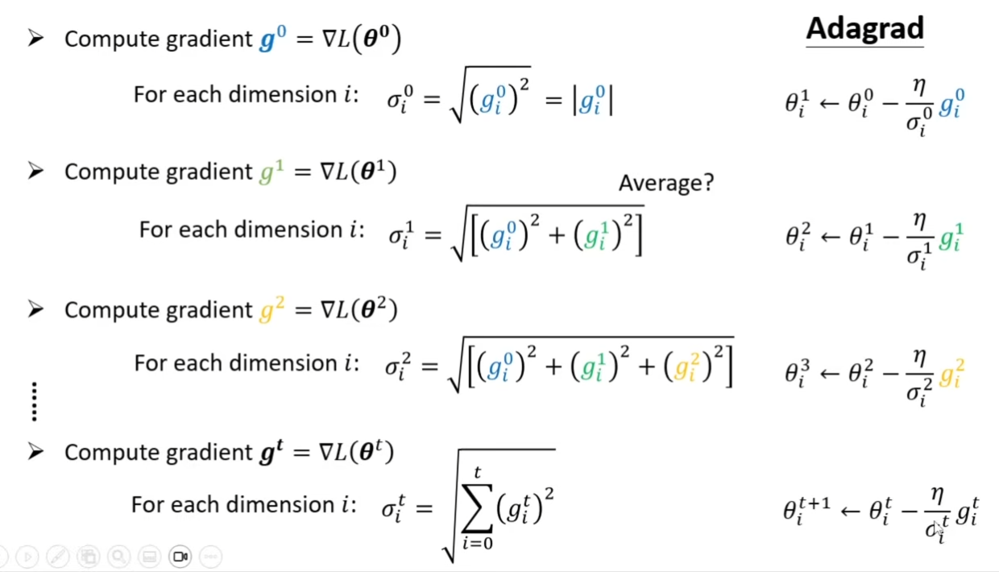
每一个dimension分开操作，每一个参数维度做的都是一摸一样的事情。学习率除以我们算的数值，数值越大，计算出的实际lr越小。不停的计算平方和并开根号。是否需要取平均？不取平均保证学习过程中lr越来越小，符合我们的预期。
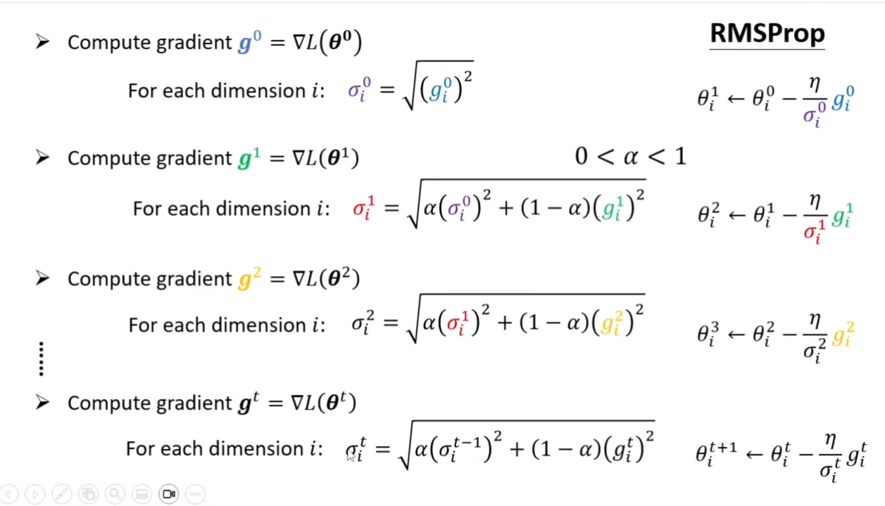
就是上面的加上一个权重系数罢了。但是有点区别是不是把之前步骤的gradient拿过来平方求和，而是把上一步算出来的\(\sigma\)平方进行加权，反正看式子也能够理解。lr过大的话会很不稳定。alpha设置为0.9，新梯度权重为0.1也是比较合理的？
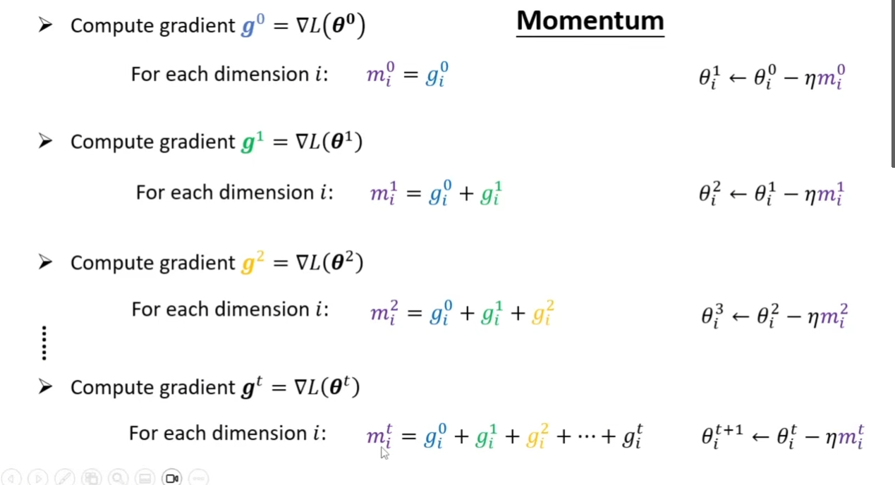
上面的最简单的动量也就是把梯度进行一个累加而已。
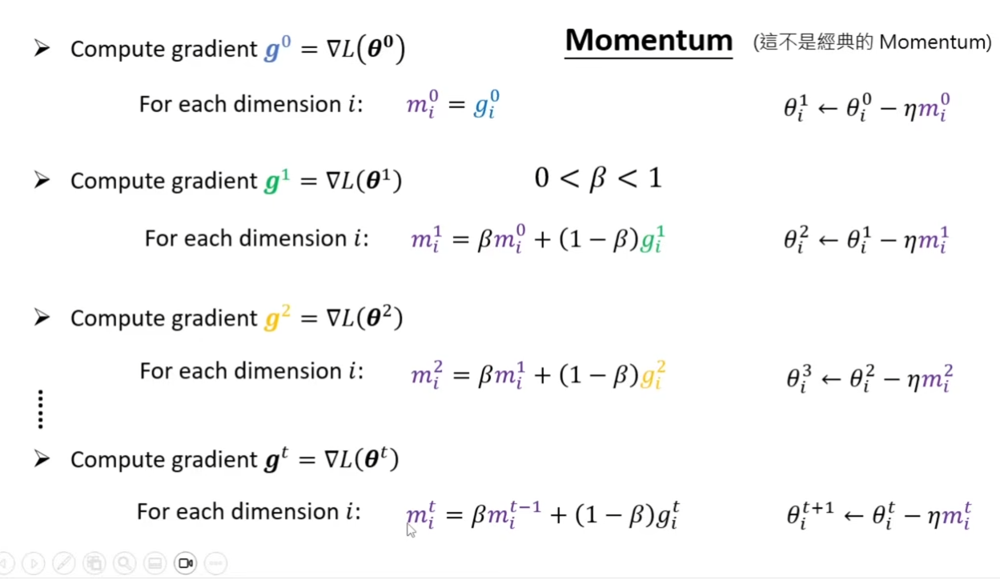
将RMSProp思想移植过来，给予最近的动量更多的权重，可能与经典论文的不太一样。beta为0.995，给予新梯度权重0.005已经是非常多了，因为过去那么多动量也只是分到0.995而已？依照动量可以翻过一个又一个山丘。
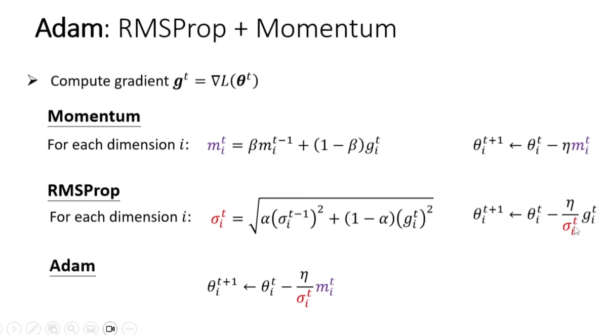
同时使用Momentum（用动量取代梯度决定更新方向和主体）和RMSProp（给予最新梯度更大权重控制lr更新幅度），也就得到了Adam的主要部分。
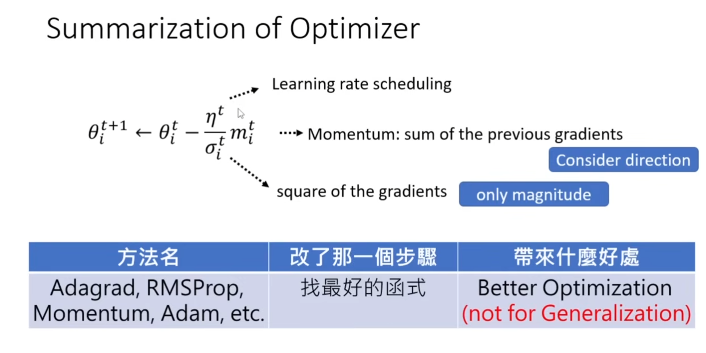
总结optimization这一步，改进的是第三部，我们要找到一个更好的训练函式，使得training loss可以被压得更低。但并不意味着这就会带来在验证集或真实情景下更好的表现（not for Generalization）。所以这时候换optimization可能就没有帮助了。
有可能对generation带来好处的改进第三步的方法？ - Dropout： - 训练时随机丢掉一些神经元 - 验证和测试时火力全开 - 练习轻功？训练时增加难度 - Better Generation，但是worse optimization。 - 注意使用的时机？所有方法都不是随便使用的。在Optimization上已经很好了但是generation还是表现不佳，我们才可能考虑使用dropout。
Initialization： - 不同的起始位置，可能会导致非常不同的训练结果。 - Optimizer可以克服初始位置带来的差异吗？ - 好上加好？ - 当有多个Training Loss最低点的时候，起始位置决定我们走到哪一个最低点。如何带领我们走到最好的一个？
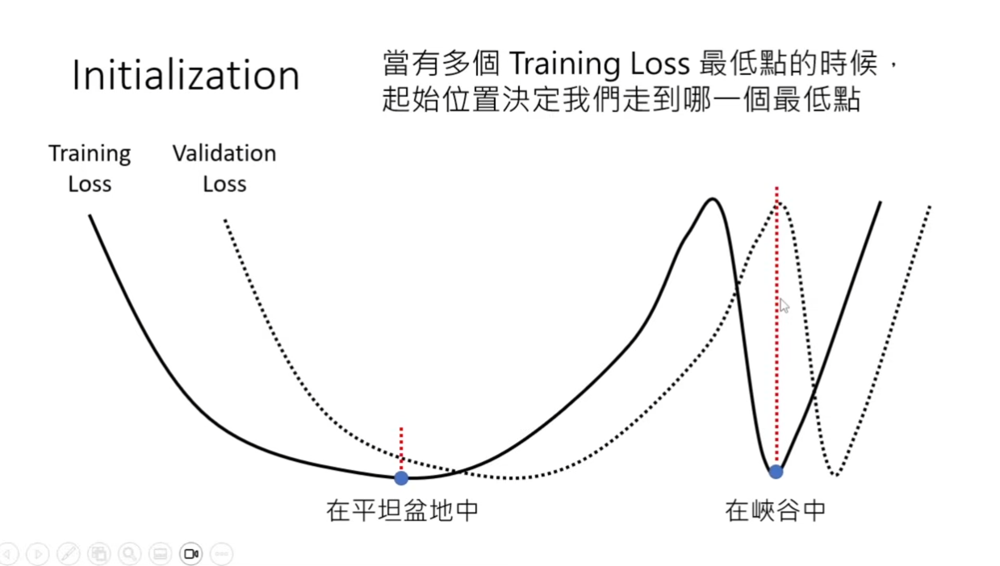
可以看到有些地方还是会有严重的overfitting问题。因此，依赖一个好的initialization，可能能够帮我们找到一个好的global minimum。
- 目前可能还有待研究？
- 比较好的大绝招？Pre-train
- 想让模型做一些Pretext Task（借口任务？）作为想要关心的Downstream Task的Initialization
- Pretext Task？怎么是好的？可以轻易收集大量资料进行训练。
- pre-train对于Optimization和Generalization都有帮助。
优化第二个步骤：我有哪些选择
- Better Network Architecture
- 划定一个刚刚好的函式范围
- 函式集合太小，可能会没有包含好的函式，那怎么找也找不到。
- 函式集合大一点，比较可能包到好的函式，但是也容易overfitting
- 选一个小范围但刚好包含好的范式，需要你根据domain knowledge进行划定。
- Convolutional Layer举例
- 图片处理
- 1000*1000图片，其实是3*1000*1000，也就是这么多维度的feature。
- 全连接？只考虑w，每个neurons就有3000000个参数，很恐怖。
- 真的需要这么多的参数吗？这时候就需要人进行决策了。
- 判断一只鸟也许只需要几个特征而不是整张图片就够了，所以可以帮助某些神经元只观察一部分。
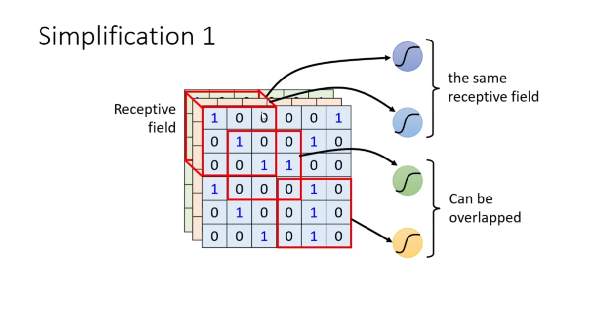
人去决定神经元看到的范围Receptive field，是否需要重叠，是否多个neurons负责盯着同一片区域？不同的neurons是不是可以有不同的大小呢？neurons是不是看的可以不是正方形呢？都可以。
目前图像处理其实已经有一套比较标准的处理方法：
- Typical Setting：Observation 1
- 不一定需要每个神经元盯着整张图片看。
- kernel size：33 e.g.，stride：2，一般会有一些重叠，这表示移动2，一般是把所有channel整合到一起。padding：不足一个3*3的图片，补0。
- 这种Receptive Field是比Fully Connected Layer更小的函式表示范围，前者被后者涵盖。
- CNN的第一个发明，Receptive field。
- Observation 2
- 同一个特征出现在不同的地方，不同的neurons负责的地方，实则是可以用同一组参数去处理的。
- 不同的receptive field被设置为共享同一组参数。
- 强制设定为一样，选择范围变得更小。
- CNN其实是一个更简单的东西，是Fully Connected Layer的简化。
- 是一个Convolution Layer
- CNN？Convolution？
- 改了函式搜索范围
- 好处是Better Generalization*，更加不容易overfitting。
- 根据人类的domain划定一个小的范围，又包括一个好的函式。
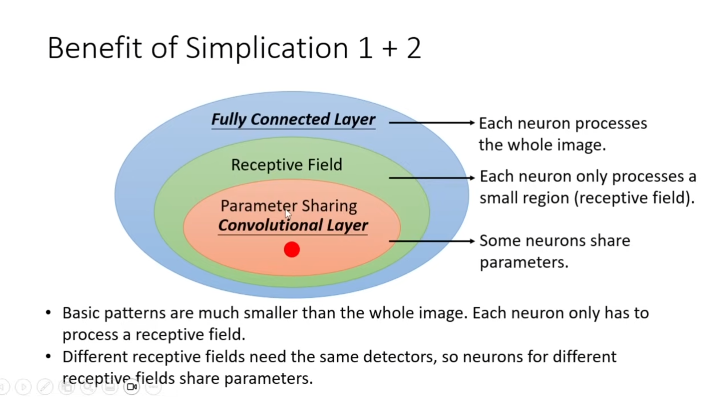
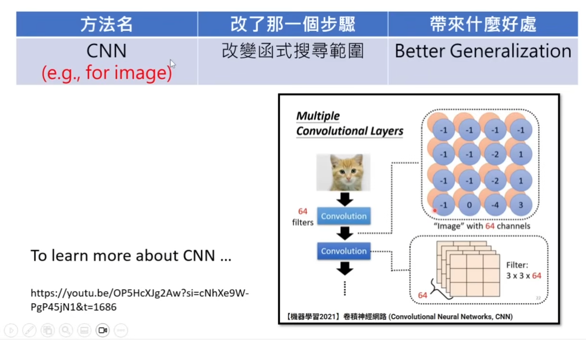
上述是对于第二层优化神经网络针对Better Generalization的情景，下面还有些针对Optimization的情况。
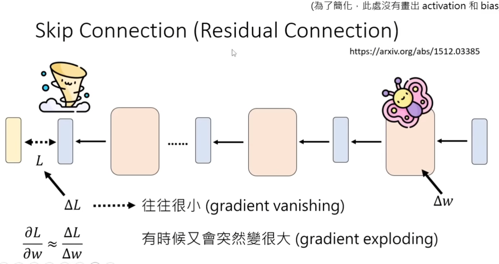
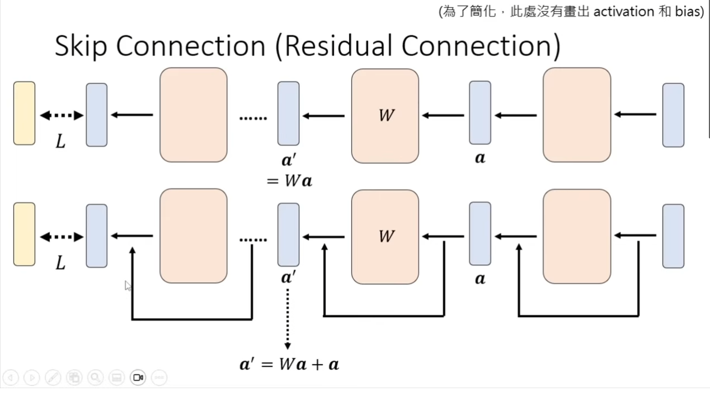
Skip Connection
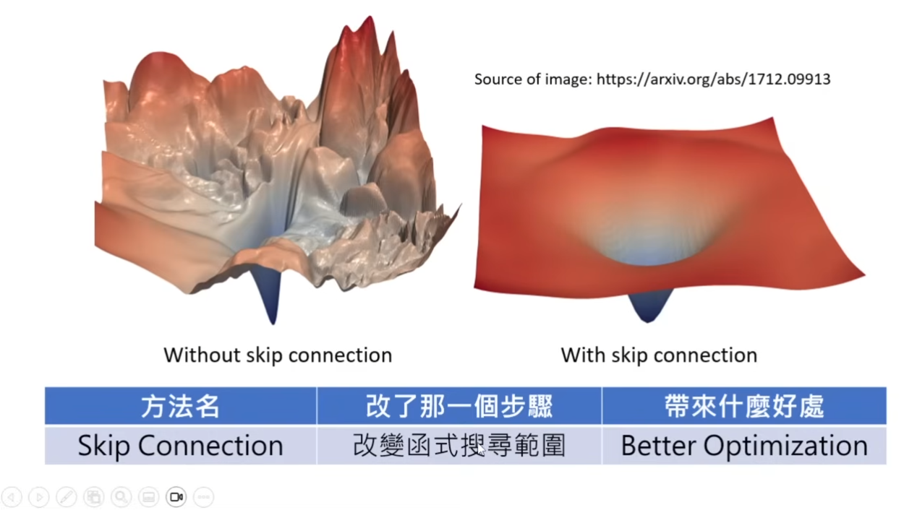
针对Optimization的类神经网络设计： - 并不是只有第三步才能影响Optimization - L和较为浅层的w的变化 - 往往影响很小gradient vanishing - 有时候又会突然变很大gradient exploding，蝴蝶效应 - 加上Skip Connection就是加上高速公路 - a的变化可以直接传导到深层 - 带来了Better Optimization，更好的进行训练 - 各种Normalization操作也能优化 - Norm进行输入输出的限制范围落在某些范围内 - 正则化等操作 - Batch Normalization - Layer Normalization - 改变了函式搜寻范围，Better Optimization，Sometimes Better Generalization
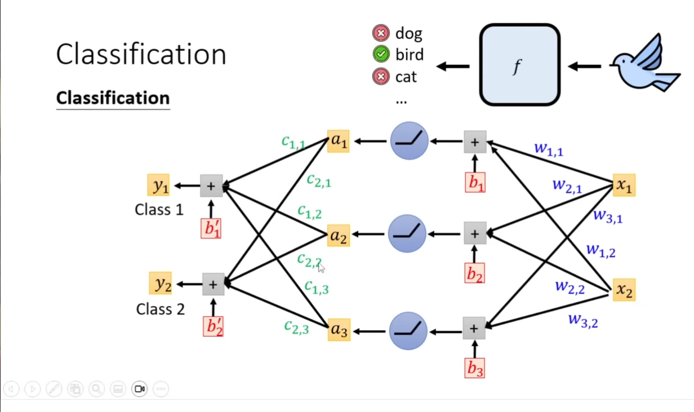
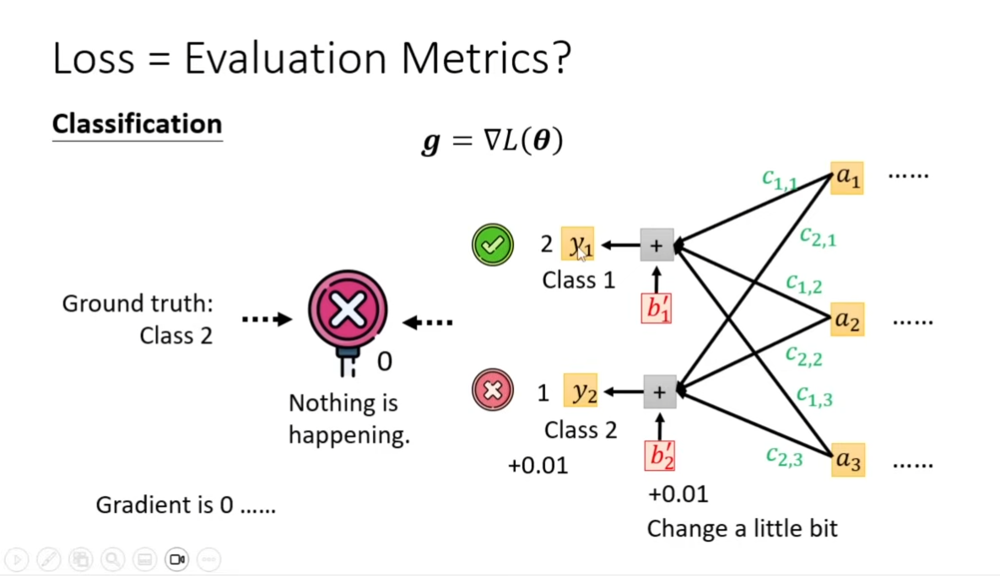
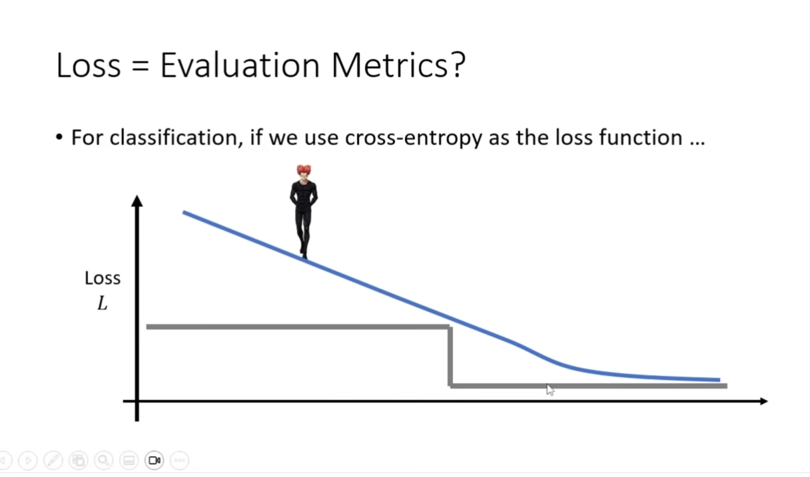
针对第一步的优化：我要找什么？有关Loss的定义 - Classification - 大模型生成问题也是分类问题 - 分类的Loss长什么样子？ - 想要类神经网络输出什么东西？其实有几个类别就输出几个数值就好。大小更大就是分类越可能的。 - Loss = Evalution Metrics？ - 正确率accuracy，正确得1分，否则0分，计算平均 - 能不能像regression问题一样直接把evaluation metrics当作loss来看呢？ - 可以看到，改变一点b2，如果实际结果没有影响，在正确率下计算的Loss也就没有变化，梯度自然为0……除非是在临界点一瞬间的变化，无法进行下坡。没办法好好地算微分！ - 最常用的是和accuracy有点像但是能很好做微分的东西，Cross-entropy是最为常用的。 - Cross-entropy - 预测结果进行softmax - ground truth也变成机率分布，其实是个one-hot的分布 - 计算两者的交叉熵 - 两个分布越接近，loss越小 - 更加容易计算微分 - 由于计算softmax，其实一个参数小小变化会影响所有其他类别的结果，也就会影响Loss，也就可以进行优化。 - 验证、测试时还是会用accuracy！因为大家只在意这个。造成了一个误差和Gap。 - 改变了我要找什么这一个步骤，带来的好处是Better Optimization，Not for Generalization - Need More Training Data…… - 克服overfitting的一个方式就是收集更多的能够反映真实世界的资料。 - 改变了我要找什么，带来的好处是Better Generalization，Not for Optimization。加了更多东西，其实是让Optimization更加困难了。 - 要记得每一个技巧的适用时机，overfitting时使用。 - Data Augmentation - 确实没法收集更多的资料，可以对现有数据进行一些变换，由此扩大了数据量。 - 必须augment必须是合理的，比如任务是分辨鸟的朝向，做flip其实答案就错误了。 - 还是Overfitting时候使用 - 还是改变了要找什么，带来的好处是Better Optimization，Not for Generalization。 - Mixup - 改变label，例如直接将图片融合，label变为50%的猫和50%的狗
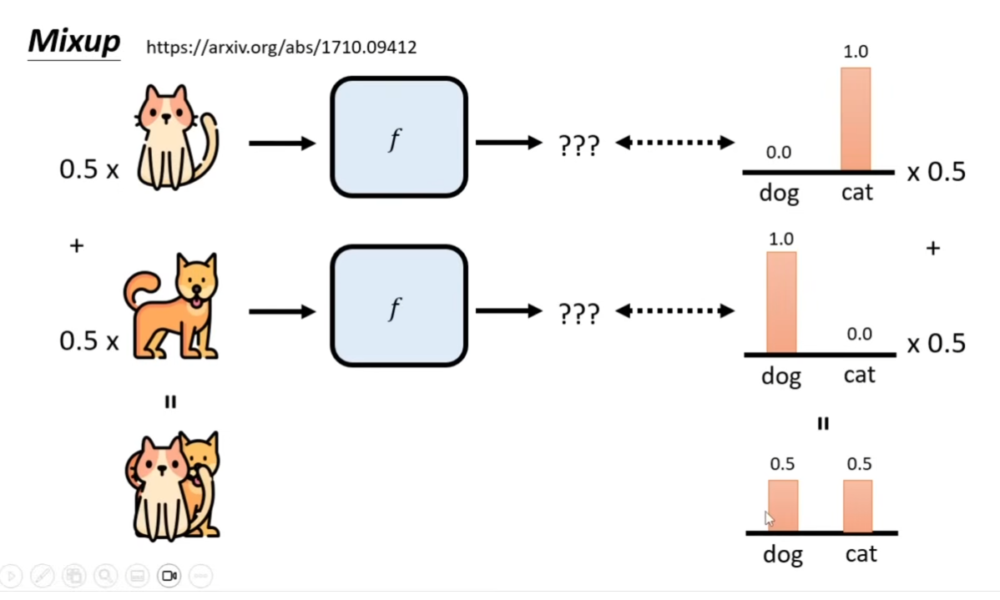
Semi-supervised Learning - Loss由两部分组成，确定的标准数据以及海量未进行标注数据。用了两部分资料！ - 如何定unlabel的loss function？ - 非黑即白的世界 - 基于这个假设，l'为一个entropy - 神经网络输出的几率分布越平均，larger entropy，否则越small - 也就是倾向于能够比较好能够分开数据的函式 - 物以类聚的世界 - 建立详尽的点的graph - 两部分，是否连接以及距离，距离可能得自己进行定义，如何进行连接也需要自己进行定义 - 改了哪一个步骤？我要找什么 - Better Generalization，Not for Optimization
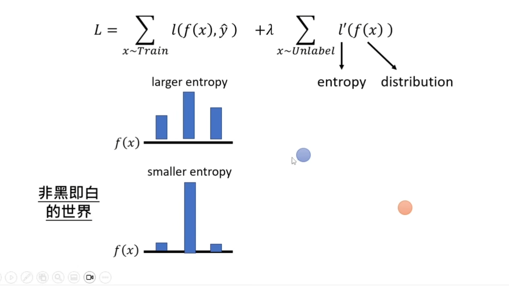
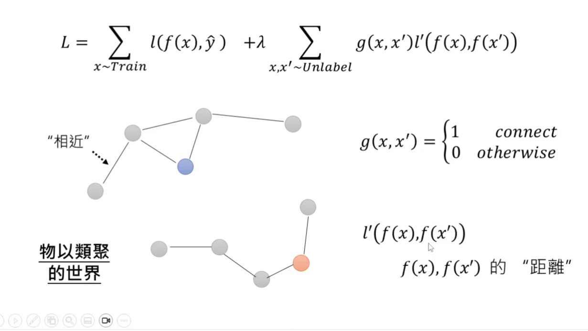
Parameter Regularization - 也可以定义一些Loss是和训练资料没有关系，而只跟我们人类对于Parameter偏好有关的Loss - 简单的参数？希望参数越接近0越好，例如就可以使用参数的平方和。 - 将原来参数弄得小一点点再进行更新的操作，叫做weight decay。所以和parameter regularization不同定义，但做的事情差不多。
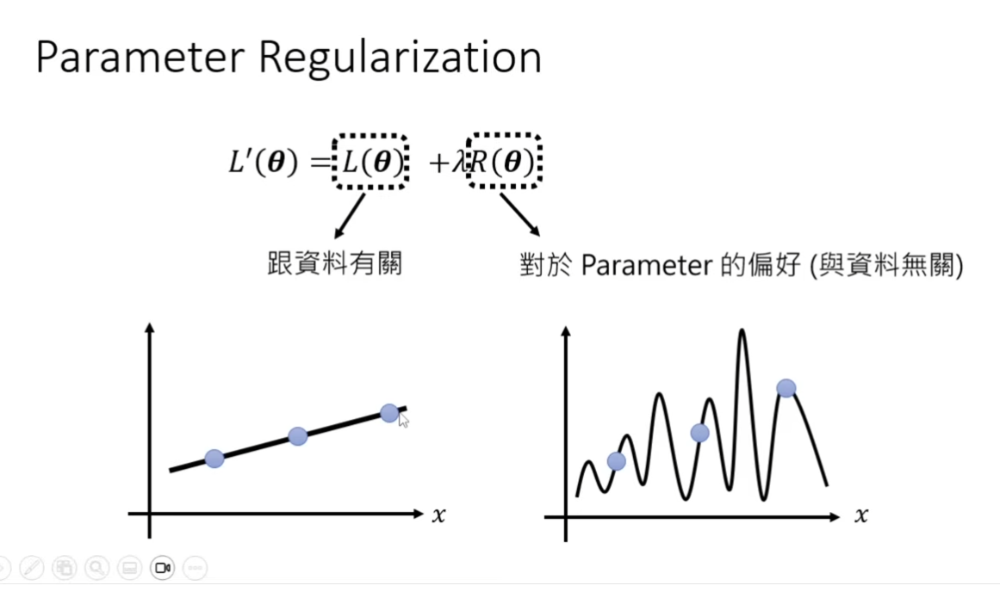
我们可能更加倾向于左边的更加简单，更加平缓的。
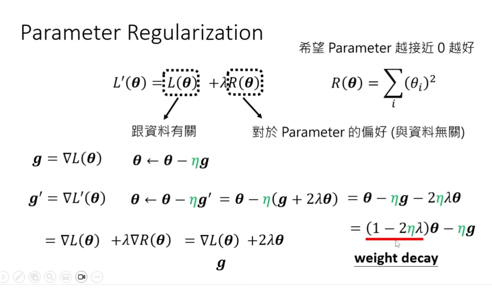
其实还是差不多，只是多了一部分而已。整理以后可以想象成\(\theta\)成了个系数例如0.99罢了。
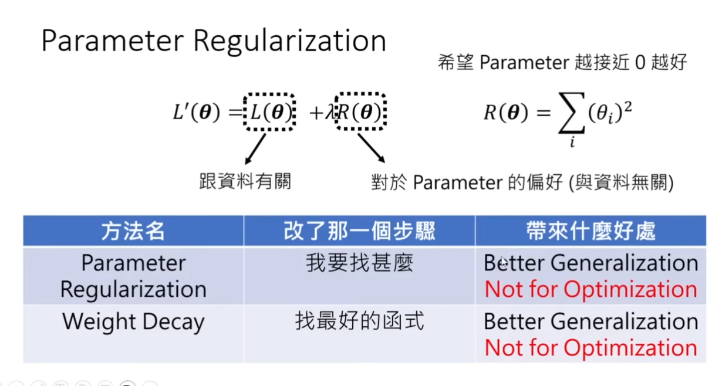
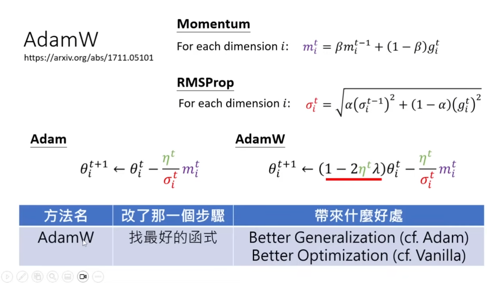
将weight decay思想用到Adam中，AdamW。相较于Adam，考虑了Generalization这件事。
下次听到一个方法时，想想改了三个步骤中的哪一个步骤以及带来了什么好处，是为了Optimization还是为了Generalization设计。
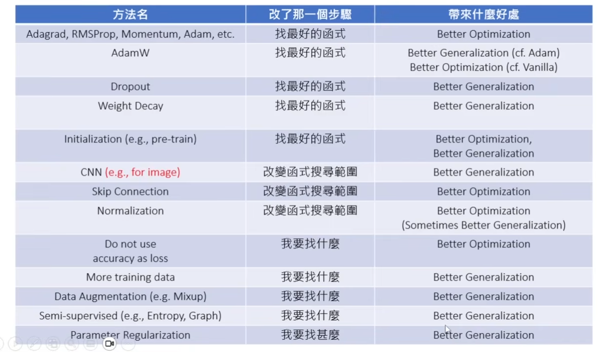